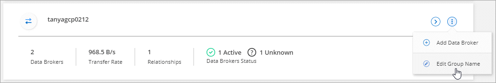
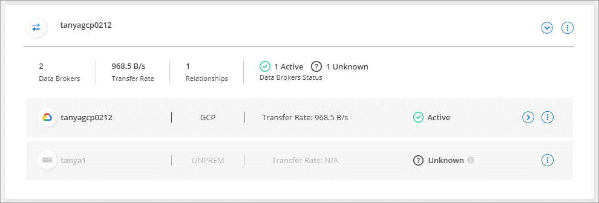

문서 변경 요청
문서 변경 요청 이 페이지 편집
이 페이지 편집 기여하는 방법 자세히 알아보기
기여하는 방법 자세히 알아보기데이터 브로커 그룹을 관리합니다
데이터 브로커 그룹은 소스 위치의 데이터를 타겟 위치로 동기화합니다. 생성하는 각 동기화 관계에 대해 그룹에 하나 이상의 데이터 브로커가 필요합니다. 그룹에 새 데이터 브로커를 추가하거나, 그룹에 대한 정보를 보는 등 데이터 브로커 그룹을 관리할 수 있습니다.
데이터 브로커 그룹의 작동 방식
데이터 브로커 그룹에는 하나 이상의 데이터 브로커가 포함될 수 있습니다. 데이터 브로커를 함께 그룹화하면 동기화 관계의 성능을 향상시킬 수 있습니다.
그룹은 여러 관계를 관리할 수 있습니다
데이터 브로커 그룹은 한 번에 하나 이상의 동기화 관계를 관리할 수 있습니다.
예를 들어, 다음과 같은 세 가지 관계가 있다고 가정해 보겠습니다.
-
관계 1은 데이터 브로커 그룹 A에서 관리합니다
-
관계 2는 데이터 브로커 그룹 B에 의해 관리됩니다
-
관계 3은 데이터 브로커 그룹 A에서 관리합니다
관계 1의 성능을 가속화하여 데이터 브로커 그룹 A에 새로운 데이터 브로커를 추가하고 싶을 것입니다 그룹 A도 동기화 관계 3 을 관리하므로 관계의 동기화 성능도 자동으로 빨라집니다.
그룹의 데이터 브로커 수입니다
대부분의 경우 단일 데이터 브로커가 동기화 관계에 대한 성능 요구사항을 충족할 수 있습니다. 그렇지 않으면 그룹에 추가 데이터 브로커를 추가하여 동기화 성능을 가속화할 수 있습니다. 하지만 먼저 동기화 성능에 영향을 줄 수 있는 다른 요소를 확인해야 합니다. "여러 데이터 브로커가 필요한 시기를 결정하는 방법에 대해 자세히 알아보십시오".
보안 권장 사항
데이터 브로커 시스템의 보안을 유지하려면 다음 사항을 따르는 것이 좋습니다.
-
SSH는 X11 전달을 허용하지 않아야 합니다
-
SSH는 TCP 연결 전달을 허용하지 않아야 합니다
-
SSH는 터널을 허용하지 않아야 합니다
-
SSH는 클라이언트 환경 변수를 수용해서는 안 됩니다
이러한 보안 권장 사항은 데이터 브로커 시스템에 대한 무단 연결을 방지하는 데 도움이 될 수 있습니다.
그룹에 새 데이터 브로커를 추가합니다
다음과 같은 여러 가지 방법으로 새 데이터 브로커를 생성할 수 있습니다.
-
새 동기화 관계를 생성할 때
-
새 그룹에서 데이터 브로커를 만드는 * 새 데이터 브로커 추가 * 를 클릭하여 * 데이터 브로커 관리 * 페이지에서
-
기존 그룹에 새 데이터 브로커를 생성하여 * 데이터 브로커 관리 * 페이지에서
-
암호화된 동기화 관계를 관리하는 그룹에 데이터 브로커를 추가할 수 없습니다.
-
기존 그룹에서 데이터 브로커를 생성하려면 데이터 브로커가 사내 데이터 브로커이거나 동일한 유형의 데이터 브로커가 되어야 합니다.
예를 들어, 그룹에 AWS 데이터 브로커가 포함된 경우 해당 그룹에 AWS 데이터 브로커나 온프레미스 데이터 브로커를 생성할 수 있습니다. 동일한 데이터 브로커 유형이 아니므로 Azure 데이터 브로커 또는 Google Cloud 데이터 브로커를 생성할 수 없습니다.
-
동기화 > 데이터 브로커 관리 * 를 클릭합니다.
-
새 데이터 브로커 추가 * 를 클릭합니다.
-
프롬프트에 따라 데이터 브로커를 생성합니다.
자세한 내용은 다음 페이지를 참조하십시오.
-
동기화 > 데이터 브로커 관리 * 를 클릭합니다.
-
작업 메뉴를 클릭하고 * 데이터 브로커 추가 * 를 선택합니다.

-
프롬프트에 따라 그룹에 데이터 브로커를 생성합니다.
자세한 내용은 다음 페이지를 참조하십시오.
그룹 이름을 편집합니다
언제든지 데이터 브로커 그룹의 이름을 변경합니다.
-
동기화 > 데이터 브로커 관리 * 를 클릭합니다.
-
작업 메뉴를 클릭하고 * 그룹 이름 편집 * 을 선택합니다.

-
새 이름을 입력하고 * 저장 * 을 클릭합니다.
Cloud Sync가 데이터 브로커 그룹의 이름을 업데이트합니다.
통합 구성을 설정합니다
동기화 프로세스 중에 동기화 관계에 오류가 발생하면 데이터 브로커 그룹의 동시성을 통합하면 동기화 오류 수를 줄일 수 있습니다. 그룹 구성을 변경하면 전송 속도가 느려져 성능에 영향을 줄 수 있습니다.
직접 구성을 변경하지 않는 것이 좋습니다. 구성을 변경할 시기와 변경 방법을 알아보려면 NetApp에 문의해야 합니다.
-
데이터 브로커 관리 * 를 클릭합니다.
-
데이터 브로커 그룹의 설정 아이콘을 클릭합니다.

-
필요에 따라 설정을 변경한 다음 * 구성 취소 * 를 클릭합니다.
다음 사항에 유의하십시오.
-
변경할 설정을 선택하고 선택할 수 있습니다. 한 번에 네 가지 설정을 모두 변경할 필요는 없습니다.
-
새 구성을 데이터 브로커로 보낸 후 데이터 브로커가 자동으로 다시 시작하고 새 구성을 사용합니다.
-
이 변경 사항이 발생할 때까지 1분 정도 걸릴 수 있으며 Cloud Sync 인터페이스에 표시될 수 있습니다.
-
데이터 브로커가 실행되고 있지 않으면 Cloud Sync에서 데이터 브로커와 통신할 수 없기 때문에 구성이 변경되지 않습니다. 데이터 브로커가 다시 시작되면 구성이 변경됩니다.
-
통합 구성을 설정하면 새 데이터 브로커가 자동으로 새 구성을 사용합니다.
-
그룹 간에 데이터 브로커 이동
대상 데이터 브로커 그룹의 성능을 높여야 하는 경우 그룹 간에 데이터 브로커를 이동할 수 있습니다.
예를 들어, 데이터 브로커에서 동기화 관계를 더 이상 관리하지 않는 경우 동기화 관계를 관리하는 다른 그룹으로 쉽게 이동할 수 있습니다.
-
데이터 브로커 그룹이 동기화 관계를 관리하고 있고 그룹에 데이터 브로커가 하나만 있는 경우에는 해당 데이터 브로커를 다른 그룹으로 이동할 수 없습니다.
-
암호화된 동기화 관계를 관리하는 그룹으로 데이터 브로커를 이동하거나 그룹에서 데이터 브로커를 이동할 수 없습니다.
-
현재 구축 중인 데이터 브로커는 이동할 수 없습니다.
-
동기화 > 데이터 브로커 관리 * 를 클릭합니다.
-
을 클릭합니다 그룹의 데이터 브로커 목록을 확장합니다.
-
데이터 브로커에 대한 작업 메뉴를 클릭하고 * 데이터 브로커 이동 * 을 선택합니다.

-
새 데이터 브로커 그룹을 만들거나 기존 데이터 브로커 그룹을 선택합니다.
-
이동 * 을 클릭합니다.
Cloud Sync는 데이터 브로커를 신규 또는 기존 데이터 브로커 그룹으로 옮깁니다. 이전 그룹에 다른 데이터 브로커가 없으면 Cloud Sync에서 삭제합니다.
프록시 구성을 업데이트합니다
새 프록시 구성에 대한 세부 정보를 추가하거나 기존 프록시 구성을 편집하여 데이터 브로커의 프록시 구성을 업데이트합니다.
-
동기화 > 데이터 브로커 관리 * 를 클릭합니다.
-
을 클릭합니다 그룹의 데이터 브로커 목록을 확장합니다.
-
데이터 브로커에 대한 작업 메뉴를 클릭하고 * 프록시 구성 편집 * 을 선택합니다.
-
프록시에 대한 세부 정보(호스트 이름, 포트 번호, 사용자 이름 및 암호)를 지정합니다.
-
Update * 를 클릭합니다.
Cloud Sync는 데이터 브로커를 업데이트하여 인터넷 액세스에 프록시 구성을 사용합니다.
데이터 브로커의 구성을 봅니다
데이터 브로커에 대한 세부 정보를 보고 호스트 이름, IP 주소, 사용 가능한 CPU 및 RAM 등을 식별할 수 있습니다.
Cloud Sync에서는 데이터 브로커에 대해 다음과 같은 세부 정보를 제공합니다.
-
기본 정보: 인스턴스 ID, 호스트 이름 등
-
네트워크: 지역, 네트워크, 서브넷, 사설 IP 등
-
소프트웨어: Linux 배포, 데이터 브로커 버전 등
-
하드웨어: CPU 및 RAM
-
구성: 데이터 브로커의 두 가지 주요 프로세스(스캐너 및 전송기)에 대한 세부 정보입니다

스캐너가 소스와 대상을 스캔하고 복사할 대상을 결정합니다. 전송자는 실제 복사를 수행합니다. NetApp 직원은 이러한 구성 세부 정보를 사용하여 성능을 최적화할 수 있는 조치를 제안할 수 있습니다.
-
동기화 > 데이터 브로커 관리 * 를 클릭합니다.
-
을 클릭합니다 그룹의 데이터 브로커 목록을 확장합니다.
-
을 클릭합니다 데이터 브로커에 대한 세부 정보를 봅니다.

데이터 브로커로 문제를 해결합니다
Cloud Sync에서는 문제를 해결하는 데 도움이 되는 각 데이터 브로커의 상태를 표시합니다.
-
"알 수 없음" 또는 "실패" 상태의 데이터 브로커를 식별합니다.

-
에 마우스를 올려 놓습니다
 아이콘을 클릭하여 실패 원인을 확인합니다.
아이콘을 클릭하여 실패 원인을 확인합니다. -
문제를 해결하십시오.
예를 들어, 데이터 브로커가 오프라인인 경우 다시 시작하기만 하면 되고, 초기 구축에 실패한 경우 데이터 브로커를 제거해야 할 수 있습니다.
그룹에서 데이터 브로커를 제거합니다
더 이상 필요하지 않거나 초기 구축에 실패한 경우 그룹에서 데이터 브로커를 제거할 수 있습니다. 이 작업을 수행하면 Cloud Sync의 레코드에서 데이터 브로커만 삭제됩니다. 데이터 브로커와 추가 클라우드 리소스를 수동으로 삭제해야 합니다.
-
Cloud Sync 그룹에서 마지막 데이터 브로커를 제거하면 그룹이 삭제됩니다.
-
해당 그룹을 사용하는 관계가 있는 경우 그룹에서 마지막 데이터 브로커를 제거할 수 없습니다.
-
동기화 > 데이터 브로커 관리 * 를 클릭합니다.
-
을 클릭합니다 그룹의 데이터 브로커 목록을 확장합니다.
-
데이터 브로커에 대한 작업 메뉴를 클릭하고 * 데이터 브로커 * 를 선택합니다.

-
데이터 브로커 * 제거 를 클릭합니다.
Cloud Sync는 그룹에서 데이터 브로커를 제거합니다.
데이터 브로커 그룹을 삭제합니다
데이터 브로커 그룹이 더 이상 동기화 관계를 관리하지 않으면 그룹을 삭제할 수 있습니다. 그러면 Cloud Sync에서 모든 데이터 브로커가 제거됩니다.
Cloud Sync에서 제거하는 데이터 브로커는 Cloud Sync의 레코드에서만 삭제됩니다. 클라우드 공급자 및 추가 클라우드 리소스를 수동으로 데이터 브로커 인스턴스를 삭제해야 합니다.
-
동기화 > 데이터 브로커 관리 * 를 클릭합니다.
-
작업 메뉴를 클릭하고 * 그룹 삭제 * 를 선택합니다.
-
확인하려면 그룹 이름을 입력하고 * 그룹 삭제 * 를 클릭합니다.
Cloud Sync는 데이터 브로커를 제거하고 그룹을 삭제합니다.